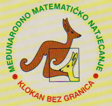

Matematika

Točno u podne - obračun iz matematike
Uspjeh našeg učenika Josipa Križanca na natjecanju KLOKAN
Matematičko natjecanje KLOKAN održano je 19. ožujka 2026. godine točno u podne. Naš Josip Križanec ostvario je izniman uspjeh...